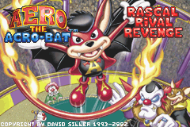
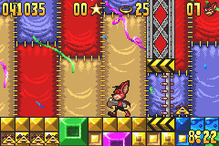

Aero the Acro-bat

Not-complete on 2020-04-26
3 / 5
Release Date: May 14, 2002
Meta Score: 71
Screenshots


Notes
Not as bad as the score might make you think, but not great. Decent little platformer which feels a little like Sonic. Suffers from making the character too big so the screen feels way too small, and requires too much exploration in its gameplay.